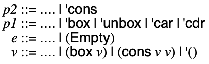
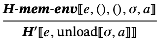
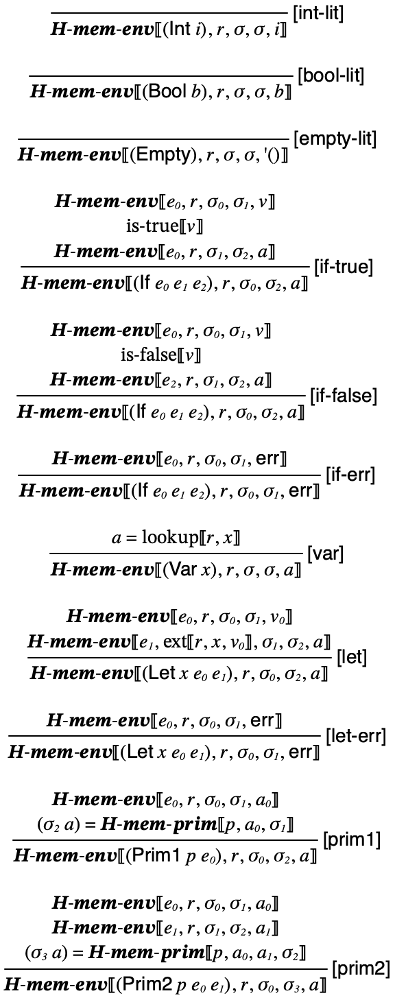
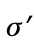
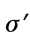
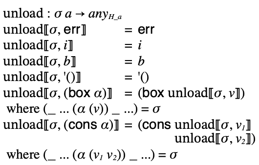

12 Hustle: heaps and lists
A little and a little, collected together, become a great deal; the heap in the barn consists of single grains, and drop and drop makes an inundation.
12.1 Inductive data
So far all of the data we have considered can fit in a single machine word (64-bits). Well, integers can’t, but we truncated them and only consider, by fiat, those integers that fit into a register.
In the Hustle language, we will add two inductively defined data types, boxes and pairs, which will require us to relax this restriction.
Boxes are like unary pairs, they simply hold a value, which can be projected out. Pairs hold two values which each can be projected out.
To see how values are now inductively defined notice that if you have a value v, you can make anoter value with (box v). Similarly, if v1 and v2 are values, then so is (cons v1 v2). This suggests the following recursive type definition for values:
; type Value = ; | Integer ; | Boolean ; | Character ; | Eof ; | Void ; | '() ; | (cons Value Value) ; | (box Value)
The new operations include constructors (box e) and (cons e0 e1) and projections (unbox e), (car e), and (cdr e). We’ll also include predicates for identifying boxes and pairs: (box? e) and (cons? e).
Usually boxes are mutable data structures, like OCaml’s ref type, but we will examine this aspect later. For now, we treat boxes as immutable data structures.
Examples
> (unbox (box 7)) 7
> (car (cons 3 4)) 3
> (cdr (cons 3 4)) 4
> (box? (box 7)) #t
> (cons? (cons 3 4)) #t
> (box? (cons 3 4)) #f
> (cons? (box 7)) #f
12.2 Empty lists can be all and end all
While we’ve introduced pairs, you may wonder what about lists? Just as in Racket, lists can be represented by idiomatic uses of cons: a non-empty list is a pair whose car is an element and whose cdr is the rest of the list. What’s left? We need a representation of the empty list!
In Racket, and in our languages, we write this value as '(). There’s nothing particularly special about the empty list value, we just need another distinguished value to designate it.
Using cons and '() in a structured way we can form proper list, among other useful data structures.
We use the following grammar for Hustle:

We can model this as an AST data type:
#lang racket ;; type Expr = ... ;; | (Empty) ;; type Op1 = ... ;; | 'box | 'car | 'cdr | 'unbox | 'box? | 'cons? ;; type Op2 = ... ;; | 'cons
12.3 Meaning of Hustle programs, implicitly
The meaning of Hustle programs is just a slight update to the prior language, namely we add a few new primitives.
The update to the semantics is just an extension of the semantics of primitives:

The interpreter similarly has an update to the interp-prims module:
#lang racket (require "ast.rkt") (provide interp-prim1 interp-prim2) ;; Op1 Value -> Answer (define (interp-prim1 p1 v) (match (list p1 v) [(list 'add1 (? integer?)) (add1 v)] [(list 'sub1 (? integer?)) (sub1 v)] [(list 'zero? (? integer?)) (zero? v)] [(list 'char? v) (char? v)] [(list 'char->integer (? char?)) (char->integer v)] [(list 'integer->char (? codepoint?)) (integer->char v)] [(list 'eof-object? v) (eof-object? v)] [(list 'write-byte (? byte?)) (write-byte v)] [(list 'box v) (box v)] [(list 'unbox (? box?)) (unbox v)] [(list 'car (? pair?)) (car v)] [(list 'cdr (? pair?)) (cdr v)] [(list 'empty? v) (empty? v)] [(list 'cons? v) (cons? v)] [(list 'box? v) (box? v)] [_ 'err])) ;; Op2 Value Value -> Answer (define (interp-prim2 p v1 v2) (match (list p v1 v2) [(list '+ (? integer?) (? integer?)) (+ v1 v2)] [(list '- (? integer?) (? integer?)) (- v1 v2)] [(list '< (? integer?) (? integer?)) (< v1 v2)] [(list '= (? integer?) (? integer?)) (= v1 v2)] [(list 'cons v1 v2) (cons v1 v2)] [_ 'err])) ;; Any -> Boolean (define (codepoint? v) (and (integer? v) (or (<= 0 v 55295) (<= 57344 v 1114111))))
Inductively defined data is easy to model in the semantics and interpreter because we can rely on inductively defined data at the meta-level in math or Racket, respectively.
In some sense, the semantics and interpreter don’t shed light on how constructing inductive data works because they simply use the mechanism of the defining language to construct inductive data. Let’s try to address that.
12.4 Meaning of Hustle programs, explicitly
Let’s develop an alternative semantics and interpreter that describes constructing inductive data without itself constructing inductive data.
The key here is to describe explicitly the mechanisms of memory allocation and dereference. Abstractly, memory can be thought of as association between memory addresses and values stored in those addresses. As programs run, there is a current state of the memory, which can be used to look up values (i.e. dereference memory) or to extend by making a new association between an available address and a value (i.e. allocating memory). Memory will be assumed to be limited to some finite association, but we’ll always assume programs are given a sufficiently large memory to run to completion.
In the semantics, we can model memory as a finite function from addresses to values. The datatype of addresses is left abstract. All that matters is we can compare them for equality.
We now change our definition of values to make it non-recursive:

We define an alternative semantic relation equivalent to 𝑯 called 𝑯′:

Like 𝑯, it is defined in terms of another relation. Instead of 𝑯-𝒆𝒏𝒗, we define a similar relation 𝑯-𝒎𝒆𝒎-𝒆𝒏𝒗 that has an added memory component both as input and out:

For most of the relation, the given memory σ is simply threaded through the judgment. When interpreting a primitive operation, we also thread the memory through a relation analagous to 𝑯-𝒑𝒓𝒊𝒎 called 𝑯-𝒎𝒆𝒎-𝒑𝒓𝒊𝒎. The key difference for 𝑯-𝒎𝒆𝒎-𝒑𝒓𝒊𝒎 is that cons and box operations allocate memory by extending the given memory σ and the car, cdr, and unbox operations dereference memory by looking up an association in the given memory σ:

There are only two unexplained bits at this point:
the metafunction
 which consumes a memory
and a list of values. It produces a memory and an address
which consumes a memory
and a list of values. It produces a memory and an address
 such that  is
like
such that  is
like  except it has a new association for
some
except it has a new association for
some  and
and  is fresh, i.e. it does not appear in the domain of
is fresh, i.e. it does not appear in the domain of
 .
.the metafunction
 used
in the conclusion of
used
in the conclusion of  . This function does
a final unloading of the answer and memory to obtain a answer
in the style of 𝑯.
. This function does
a final unloading of the answer and memory to obtain a answer
in the style of 𝑯.
The definition of  is
omitted, since it depends on the particular representation
chosen for
is
omitted, since it depends on the particular representation
chosen for  , but however you choose to
represent addresses, it will be easy to define appropriately.
, but however you choose to
represent addresses, it will be easy to define appropriately.
The definition of  just traces
through the memory to reconstruct an inductive piece of data:
just traces
through the memory to reconstruct an inductive piece of data:

With the semantics of explicit memory allocation and dereference in place, we can write an interepreter to match it closely.
We could define something very similar to the semantics by threading through some representation of a finite function serving as the memory, just like the semantics. Or we could do something that will produce the same result but using a more concrete mechanism that is like the actual memory on a computer. Let’s consider the latter approach.
We can use a Racket list to model the memory.
#lang racket (provide interp interp-env-heap) (require "heap.rkt" "env.rkt" "unload.rkt" "interp-prims-heap.rkt" "ast.rkt") ;; type Answer* = ;; | (cons Heap Value*) ;; | 'err ;; type Value* = ;; | Integer ;; | Boolean ;; | Character ;; | Eof ;; | Void ;; | '() ;; | (list 'box Address) ;; | (list 'cons Address) ;; type Heap = (Listof Value*) ;; type REnv = (Listof (List Id Value*)) ;; Expr -> Answer (define (interp e) (unload (interp-env-heap e '() '()))) ;; Expr REnv Heap -> Answer* (define (interp-env-heap e r h) (match e [(Int i) (cons h i)] [(Bool b) (cons h b)] [(Char c) (cons h c)] [(Eof) (cons h eof)] [(Empty) (cons h '())] [(Var x) (cons h (lookup r x))] [(Prim0 'void) (cons h (void))] [(Prim0 'peek-byte) (cons h (peek-byte))] [(Prim0 'read-byte) (cons h (read-byte))] [(Prim1 p e) (match (interp-env-heap e r h) ['err 'err] [(cons h v) (interp-prim1 p v h)])] [(Prim2 p e1 e2) (match (interp-env-heap e1 r h) ['err 'err] [(cons h v1) (match (interp-env-heap e2 r h) ['err 'err] [(cons h v2) (interp-prim2 p v1 v2 h)])])] [(If p e1 e2) (match (interp-env-heap p r h) ['err 'err] [(cons h v) (if v (interp-env-heap e1 r h) (interp-env-heap e2 r h))])] [(Begin e1 e2) (match (interp-env-heap e1 r h) ['err 'err] [(cons h _) (interp-env-heap e2 r h)])] [(Let x e1 e2) (match (interp-env-heap e1 r h) ['err 'err] [(cons h v) (interp-env-heap e2 (ext r x v) h)])]))
The real trickiness comes when we want to model such data in an impoverished setting that doesn’t have such things, which of course is the case in assembly.
The problem is that a value such as (box v) has a value inside it. Pairs are even worse: (cons v0 v1) has two values inside it. If each value is represented with 64 bits, it would seem a pair takes at a minimum 128-bits to represent (plus we need some bits to indicate this value is a pair). What’s worse, those v0 and v1 may themselves be pairs or boxes. The great power of inductive data is that an arbitrarily large piece of data can be constructed. But it would seem impossible to represent each piece of data with a fixed set of bits.
The solution is to allocate such data in memory, which can in principle be arbitrarily large, and use a pointer to refer to the place in memory that contains the data.
12.5 Representing Hustle values
The first thing do is make another distinction in the kind of values in our language. Up until now, each value could be represented in a register. We now call such values immediate values.
We introduce a new category of values which are pointer values. We will (for now) have two types of pointer values: boxes and pairs.
So we now have a kind of hierarchy of values:
- values |
+ pointers (non-zero in last 3 bits) |
* boxes |
* pairs |
+ immediates (zero in last three bits) |
* integers |
* characters |
* booleans |
* ... |
We will represent this hierarchy by shifting all the immediates over 3 bits and using the lower 3 bits to tag things as either being immediate (tagged #b000) or a box or pair. To recover an immediate value, we just shift back to the right 3 bits.
The pointer types will be tagged in the lowest three bits. A box value is tagged #b001 and a pair is tagged #b010. The remaining 61 bits will hold a pointer, i.e. an integer denoting an address in memory.
The idea is that the values contained within a box or pair will be located in memory at this address. If the pointer is a box pointer, reading 64 bits from that location in memory will produce the boxed value. If the pointer is a pair pointer, reading the first 64 bits from that location in memory will produce one of the value in the pair and reading the next 64 bits will produce the other. In other words, constructors allocate and initialize memory. Projections dereference memory.
The representation of pointers will follow a slightly different scheme than that used for immediates. Let’s first talk a bit about memory and addresses.
A memory location is represented (of course, it’s all we have!) as a number. The number refers to some address in memory. On an x86 machine, memory is byte-addressable, which means each address refers to a 1-byte (8-bit) segment of memory. If you have an address and you add 1 to it, you are refering to memory starting 8-bits from the original address.
We will make a simplifying assumption and always store things in memory in multiples of 64-bit chunks. So to go from one memory address to the next word of memory, we need to add 8 (1-byte times 8 = 64 bits) to the address.
What is 8 in binary? #b1000
What’s nice about this is that if we start from a memory location that is “word-aligned,” i.e. it ends in #b000, then every 64-bit index also ends in #b000.
What this means is that every address we’d like to represent has #b000 in its least signficant bits. We can therefore freely uses these three bits to tag the type of the pointer without needing to shift the address around. If we have a box pointer, we can simply zero out the box type tag to obtain the address of the boxes content. Likewise with pairs.
We use a register, 'rbx, to hold the address of the next free memory location in memory. To allocate memory, we simply increment the content of 'rbx by a multiple of 8. To initialize the memory, we just write into the memory at that location. To contruct a pair or box value, we just tag the unused bits of the address.
The generated code will have to coordinate with the run-time system to initialize 'rbx appropriately, which we discuss in A Run-Time for Hustle.
So for example the following creates a box containing the value 7:
(seq (Mov 'rax (arithmetic-shift 7 imm-shift)) (Mov (Offset 'rbx 0) 'rax) ; write '7' into address held by rbx (Mov 'rax 'rbx) ; copy pointer into return register (Or 'rax type-box) ; tag pointer as a box (Add 'rbx 8)) ; advance rbx one word
If 'rax holds a box value, we can “unbox” it by erasing the box tag, leaving just the address of the box contents, then dereferencing the memory:
(seq (Xor 'rax type-box) ; erase the box tag (Mov 'rax (Offset 'rax 0))) ; load memory into rax
Pairs are similar. Suppose we want to make (cons 3 4):
(seq (Mov 'rax (arithmetic-shift 3 imm-shift)) (Mov (Offset 'rbx 0) 'rax) ; write '3' into address held by rbx (Mov 'rax (arithmetic-shift 4 imm-shift)) (Mov (Offset 'rbx 8) 'rax) ; write '4' into word after address held by rbx (Mov 'rax rbx) ; copy pointer into return register (Or 'rax type-pair) ; tag pointer as a pair (Add 'rbx 16)) ; advance rbx 2 words
If 'rax holds a pair value, we can project out the elements by erasing the pair tag, leaving just the address of the pair contents, then dereferencing either the first or second word of memory:
(seq (Xor 'rax type-pair) ; erase the pair tag (Mov 'rax (Offset 'rax 0)) ; load car into rax (Mov 'rax (Offset 'rax 8))) ; or... load cdr into rax
From here, writing the compiler for box, unbox, cons, car, and cdr is just a matter of putting together pieces we’ve already seen such as evaluating multiple subexpressions and type tag checking before doing projections.
12.6 A Compiler for Hustle
The compiler for Hustle is essentially the same as for Fraud, although now with support for the new primitives: box, unbox, box?, cons, car, car, cdr, cons?, and empty?:
#lang racket (provide (all-defined-out)) (require "ast.rkt" "types.rkt" a86/ast) (define rax 'rax) ; return (define rbx 'rbx) ; heap (define rdi 'rdi) ; arg (define r8 'r8) ; scratch in +, - (define r9 'r9) ; scratch in assert-type (define rsp 'rsp) ; stack ;; Op0 CEnv -> Asm (define (compile-op0 p c) (match p ['void (seq (Mov rax val-void))] ['read-byte (seq (pad-stack c) (Call 'read_byte) (unpad-stack c))] ['peek-byte (seq (pad-stack c) (Call 'peek_byte) (unpad-stack c))])) ;; Op1 CEnv -> Asm (define (compile-op1 p c) (match p ['add1 (seq (assert-integer rax c) (Add rax (imm->bits 1)))] ['sub1 (seq (assert-integer rax c) (Sub rax (imm->bits 1)))] ['zero? (let ((l1 (gensym))) (seq (assert-integer rax c) (Cmp rax 0) (Mov rax val-true) (Je l1) (Mov rax val-false) (Label l1)))] ['char? (let ((l1 (gensym))) (seq (And rax mask-char) (Xor rax type-char) (Cmp rax 0) (Mov rax val-true) (Je l1) (Mov rax val-false) (Label l1)))] ['char->integer (seq (assert-char rax c) (Sar rax char-shift) (Sal rax int-shift))] ['integer->char (seq (assert-codepoint c) (Sar rax int-shift) (Sal rax char-shift) (Xor rax type-char))] ['eof-object? (eq-imm val-eof)] ['write-byte (seq (assert-byte c) (pad-stack c) (Mov rdi rax) (Call 'write_byte) (unpad-stack c) (Mov rax val-void))] ['box (seq (Mov (Offset rbx 0) rax) (Mov rax rbx) (Or rax type-box) (Add rbx 8))] ['unbox (seq (assert-box rax c) (Xor rax type-box) (Mov rax (Offset rax 0)))] ['car (seq (assert-cons rax c) (Xor rax type-cons) (Mov rax (Offset rax 8)))] ['cdr (seq (assert-cons rax c) (Xor rax type-cons) (Mov rax (Offset rax 0)))] ['empty? (eq-imm val-empty)] ['cons? (let ((l1 (gensym))) (seq (And rax ptr-mask) (Xor rax type-cons) (Cmp rax 0) (Mov rax val-true) (Je l1) (Mov rax val-false) (Label l1)))] ['box? (let ((l1 (gensym))) (seq (And rax ptr-mask) (Xor rax type-box) (Cmp rax 0) (Mov rax val-true) (Je l1) (Mov rax val-false) (Label l1)))])) ;; Op2 CEnv -> Asm (define (compile-op2 p c) (match p ['+ (seq (Pop r8) (assert-integer r8 c) (assert-integer rax c) (Add rax r8))] ['- (seq (Pop r8) (assert-integer r8 c) (assert-integer rax c) (Sub r8 rax) (Mov rax r8))] ['< (seq (Pop r8) (assert-integer r8 c) (assert-integer rax c) (Cmp r8 rax) (Mov rax val-true) (let ((true (gensym))) (seq (Jl true) (Mov rax val-false) (Label true))))] ['= (seq (Pop r8) (assert-integer r8 c) (assert-integer rax c) (Cmp r8 rax) (Mov rax val-true) (let ((true (gensym))) (seq (Je true) (Mov rax val-false) (Label true))))] ['cons (seq (Mov (Offset rbx 0) rax) (Pop rax) (Mov (Offset rbx 8) rax) (Mov rax rbx) (Or rax type-cons) (Add rbx 16))])) ;;;;;;;;;;;;;;;;;;;;;;;;;;;;;;;;;;;;;; (define (assert-type mask type) (λ (arg c) (seq (Mov r9 arg) (And r9 mask) (Cmp r9 type) (Jne (error-label c))))) (define (type-pred mask type) (let ((l (gensym))) (seq (And rax mask) (Cmp rax type) (Mov rax (imm->bits #t)) (Je l) (Mov rax (imm->bits #f)) (Label l)))) (define assert-integer (assert-type mask-int type-int)) (define assert-char (assert-type mask-char type-char)) (define assert-box (assert-type ptr-mask type-box)) (define assert-cons (assert-type ptr-mask type-cons)) (define (assert-codepoint c) (let ((ok (gensym))) (seq (assert-integer rax c) (Cmp rax (imm->bits 0)) (Jl (error-label c)) (Cmp rax (imm->bits 1114111)) (Jg (error-label c)) (Cmp rax (imm->bits 55295)) (Jl ok) (Cmp rax (imm->bits 57344)) (Jg ok) (Jmp (error-label c)) (Label ok)))) (define (assert-byte c) (seq (assert-integer rax c) (Cmp rax (imm->bits 0)) (Jl (error-label c)) (Cmp rax (imm->bits 255)) (Jg (error-label c)))) ;; Imm -> Asm (define (eq-imm imm) (let ((l1 (gensym))) (seq (Cmp rax imm) (Mov rax val-true) (Je l1) (Mov rax val-false) (Label l1)))) ;; CEnv -> Asm ;; Pad the stack to be aligned for a call (define (pad-stack c) (match (even? (length c)) [#t (seq (Sub rsp 8))] [#f (seq)])) ;; CEnv -> Asm ;; Undo the stack alignment after a call (define (unpad-stack c) (match (even? (length c)) [#t (seq (Add rsp 8))] [#f (seq)])) ;; CEnv -> Label ;; Determine correct error handler label to jump to. (define (error-label c) (match (even? (length c)) [#t 'raise_error] [#f 'raise_error_align]))
We can now confirm that the compiler generates code similar to what we wrote by hand above:
Examples
> (define (show e c) (compile-e (parse e) c)) > (show '(box 7) '())
(list
(Mov 'rax 112)
(Mov (Offset 'rbx 0) 'rax)
(Mov 'rax 'rbx)
(Or 'rax 1)
(Add 'rbx 8))
This moves the encoding of 7 into 'rax, then writes it into the memory address pointed to by 'rbx, i.e. the next free memory location. That address is then moved to 'rax and tagged as a box, which is the result of the expression. The final step is to increment 'rbx by 8 to advance the free memory pointer since one word of memory is now used.
Suppose we have a box value bound to variable x, then this code will unbox the value:
Examples
> (show '(unbox x) '(x))
(list
(Mov 'rax (Offset 'rsp 0))
(Mov 'r9 'rax)
(And 'r9 7)
(Cmp 'r9 1)
(Jne 'raise_error_align)
(Xor 'rax 1)
(Mov 'rax (Offset 'rax 0)))
This loads x from the stack into 'rax, then does tag checking to make sure it’s a box pointer, after which it erases the tag to reveal the address and loads that memory address into 'rax, thereby retrieving the value in the box.
The way that cons, car, and cdr work are essentially the same, except that pairs hold two values instead of one:
Examples
> (show '(cons 7 5) '())
(list
(Mov 'rax 112)
(Push 'rax)
(Mov 'rax 80)
(Mov (Offset 'rbx 0) 'rax)
(Pop 'rax)
(Mov (Offset 'rbx 8) 'rax)
(Mov 'rax 'rbx)
(Or 'rax 2)
(Add 'rbx 16))
> (show '(car x) '(x))
(list
(Mov 'rax (Offset 'rsp 0))
(Mov 'r9 'rax)
(And 'r9 7)
(Cmp 'r9 2)
(Jne 'raise_error_align)
(Xor 'rax 2)
(Mov 'rax (Offset 'rax 8)))
> (show '(cdr x) '(x))
(list
(Mov 'rax (Offset 'rsp 0))
(Mov 'r9 'rax)
(And 'r9 7)
(Cmp 'r9 2)
(Jne 'raise_error_align)
(Xor 'rax 2)
(Mov 'rax (Offset 'rax 0)))
12.7 A Run-Time for Hustle
First, we extend our runtime system’s view of values to include pointers and use C struct to represent them:
#ifndef VALUES_H #define VALUES_H #include <stdint.h> /* any abstract value */ typedef int64_t val_t; typedef enum type_t { T_INVALID = -1, /* immediates */ T_INT, T_BOOL, T_CHAR, T_EOF, T_VOID, T_EMPTY, /* pointers */ T_BOX, T_CONS, } type_t; typedef uint32_t val_char_t; typedef struct val_box_t { val_t val; } val_box_t; typedef struct val_cons_t { val_t snd; val_t fst; } val_cons_t; /* return the type of x */ type_t val_typeof(val_t x); /** * Wrap/unwrap values * * The behavior of unwrap functions are undefined on type mismatch. */ int64_t val_unwrap_int(val_t x); val_t val_wrap_int(int64_t i); int val_unwrap_bool(val_t x); val_t val_wrap_bool(int b); val_char_t val_unwrap_char(val_t x); val_t val_wrap_char(val_char_t b); val_t val_wrap_eof(); val_t val_wrap_void(); val_box_t* val_unwrap_box(val_t x); val_t val_wrap_box(val_box_t* b); val_cons_t* val_unwrap_cons(val_t x); val_t val_wrap_cons(val_cons_t* c); #endif
The implementation of val_typeof is extended to handle pointer types:
#include "types.h" #include "values.h" type_t val_typeof(val_t x) { switch (x & ptr_type_mask) { case box_type_tag: return T_BOX; case cons_type_tag: return T_CONS; } if ((int_type_mask & x) == int_type_tag) return T_INT; if ((char_type_mask & x) == char_type_tag) return T_CHAR; switch (x) { case val_true: case val_false: return T_BOOL; case val_eof: return T_EOF; case val_void: return T_VOID; case val_empty: return T_EMPTY; } return T_INVALID; } int64_t val_unwrap_int(val_t x) { return x >> int_shift; } val_t val_wrap_int(int64_t i) { return (i << int_shift) | int_type_tag; } int val_unwrap_bool(val_t x) { return x == val_true; } val_t val_wrap_bool(int b) { return b ? val_true : val_false; } val_char_t val_unwrap_char(val_t x) { return (val_char_t)(x >> char_shift); } val_t val_wrap_char(val_char_t c) { return (((val_t)c) << char_shift) | char_type_tag; } val_t val_wrap_eof(void) { return val_eof; } val_t val_wrap_void(void) { return val_void; } val_box_t* val_unwrap_box(val_t x) { return (val_box_t *)(x ^ box_type_tag); } val_t val_wrap_box(val_box_t* b) { return ((val_t)b) | box_type_tag; } val_cons_t* val_unwrap_cons(val_t x) { return (val_cons_t *)(x ^ cons_type_tag); } val_t val_wrap_cons(val_cons_t *c) { return ((val_t)c) | cons_type_tag; }
The rest of the run-time system for Hustle is more involved for two main reasons:
The first is that the compiler relies on a pointer to free memory residing in 'rbx. The run-time system will be responsible for allocating this memory and initializing the 'rdi register. To allocate memory, it uses malloc. It passes the pointer returned by malloc to the entry function. The protocol for calling functions in C says that the first argument will be passed in the 'rdi register. Since malloc produces 16-byte aligned addresses on 64-bit machines, 'rdi is initialized with an address that ends in #b000, satisfying our assumption about addresses.
Once the runtime system has provided the heap address in 'rdi, it becomes our responsibility to keep track of that value. Because 'rdi is used to pass arguments to C functions, we can’t keep our heap pointer in 'rdi and expect it to be saved. This leaves us with two options:
We can ensure that we save 'rdi somewhere safe whenever we might call a C function
We can move the value away from 'rdi as soon as possible and never have to worry about 'rdi being clobbered during a call to a C function (as long as we pick a good place!)
We’ve decided to use the second option, which leaves the choice of where to move the value once we receive it from the runtime system. As usual, we will consult the System V Calling Convention, which tells us that 'rbx is a callee save register, which means that any C function we might call is responsible for ensuring that the value in the register is saved and restored. In other words: we, the caller, don’t have to worry about it! Because of this we’re going to use 'rbx to store our heap pointer. You can see that we do this in the compiler with (Mov 'rbx 'rdi) as part of our entry code.
#include <stdio.h> #include <stdlib.h> #include "values.h" #include "print.h" #include "runtime.h" FILE* in; FILE* out; void (*error_handler)(); val_t *heap; void error_exit() { printf("err\n"); exit(1); } void raise_error() { return error_handler(); } int main(int argc, char** argv) { in = stdin; out = stdout; error_handler = &error_exit; heap = malloc(8 * heap_size); val_t result; result = entry(heap); print_result(result); if (val_typeof(result) != T_VOID) putchar('\n'); free(heap); return 0; }
The second complication comes from printing. Now that values include inductively defined data, the printer must recursively traverse these values to print them. It also must account for the wrinkle of how the printing of proper and improper lists is different:
#include <stdio.h> #include <inttypes.h> #include "values.h" void print_char(val_char_t); void print_codepoint(val_char_t); void print_cons(val_cons_t *); void print_result_interior(val_t); int utf8_encode_char(val_char_t, char *); void print_result(val_t x) { switch (val_typeof(x)) { case T_INT: printf("%" PRId64, val_unwrap_int(x)); break; case T_BOOL: printf(val_unwrap_bool(x) ? "#t" : "#f"); break; case T_CHAR: print_char(val_unwrap_char(x)); break; case T_EOF: printf("#<eof>"); break; case T_VOID: break; case T_EMPTY: case T_BOX: case T_CONS: printf("'"); print_result_interior(x); break; case T_INVALID: printf("internal error"); } } void print_result_interior(val_t x) { switch (val_typeof(x)) { case T_EMPTY: printf("()"); break; case T_BOX: printf("#&"); print_result_interior(val_unwrap_box(x)->val); break; case T_CONS: printf("("); print_cons(val_unwrap_cons(x)); printf(")"); break; default: print_result(x); } } void print_cons(val_cons_t *cons) { print_result_interior(cons->fst); switch (val_typeof(cons->snd)) { case T_EMPTY: // nothing break; case T_CONS: printf(" "); print_cons(val_unwrap_cons(cons->snd)); break; default: printf(" . "); print_result_interior(cons->snd); break; } } void print_char(val_char_t c) { printf("#\\"); switch (c) { case 0: printf("nul"); break; case 8: printf("backspace"); break; case 9: printf("tab"); break; case 10: printf("newline"); break; case 11: printf("vtab"); break; case 12: printf("page"); break; case 13: printf("return"); break; case 32: printf("space"); break; case 127: printf("rubout"); break; default: print_codepoint(c); } } void print_codepoint(val_char_t c) { static char buffer[5] = {0}; utf8_encode_char(c, buffer); printf("%s", buffer); } int utf8_encode_char(val_char_t c, char *buffer) { // Output to buffer using UTF-8 encoding of codepoint // https://en.wikipedia.org/wiki/UTF-8 if (c < 128) { buffer[0] = (char) c; return 1; } else if (c < 2048) { buffer[0] = (char)(c >> 6) | 192; buffer[1] = ((char) c & 63) | 128; return 2; } else if (c < 65536) { buffer[0] = (char)(c >> 12) | 224; buffer[1] = ((char)(c >> 6) & 63) | 128; buffer[2] = ((char) c & 63) | 128; return 3; } else { buffer[0] = (char)(c >> 18) | 240; buffer[1] = ((char)(c >> 12) & 63) | 128; buffer[2] = ((char)(c >> 6) & 63) | 128; buffer[3] = ((char) c & 63) | 128; return 4; } }